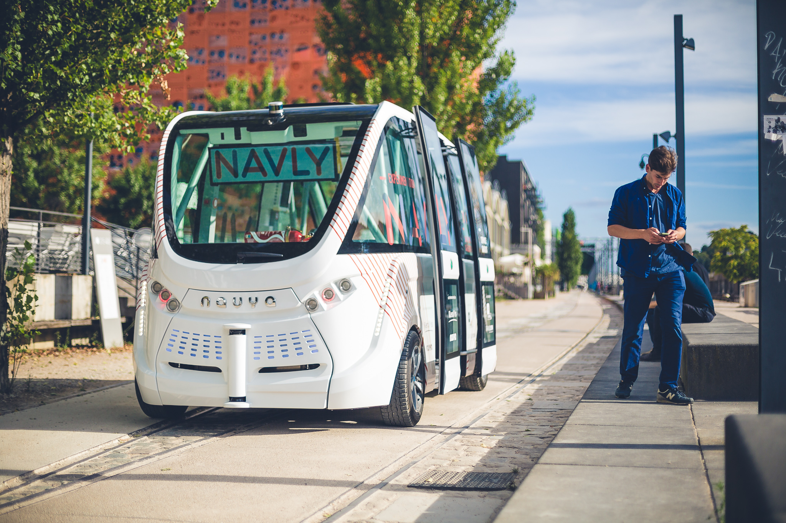

Enhancing Urban Mobility
Artificial Intelligence (AI) is transforming urban mobility through self-driving shuttles, enhancing safety, reducing congestion, and improving accessibility in smart cities. This article analyzes the current hardware and software requirements, predicts future developments, and evaluates the pros and cons of these advancements.
Self-driving shuttles rely on high-resolution cameras, radar, LiDAR, and ultrasonic sensors to generate real-time environmental data. LiDAR creates 3D maps for precise obstacle detection, while cameras and radar enable object recognition and distance measurement. High-performance computing units, often with GPUs, process data for real-time navigation, requiring robust power and cooling systems. Software, powered by deep neural networks, analyzes sensor data to identify objects, predict pedestrian behavior, and plan routes, demanding high reliability and cybersecurity to prevent hacking.
Future hardware will likely include compact, cost-effective sensors like next-generation LiDAR and neuromorphic chips, improving energy efficiency. 6G networks will enhance V2X communication with low latency. Software advancements, such as reinforcement learning, will enable shuttles to adapt to complex scenarios like construction zones or erratic pedestrian behavior.